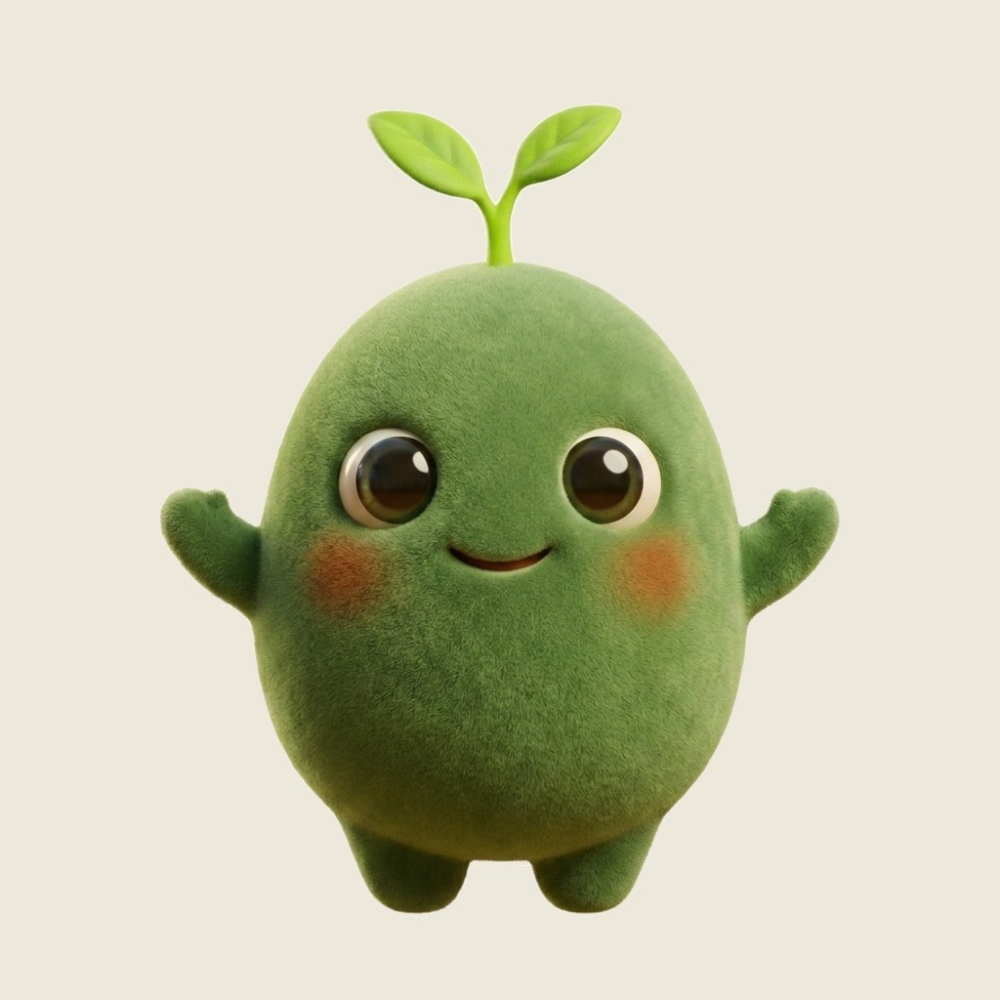
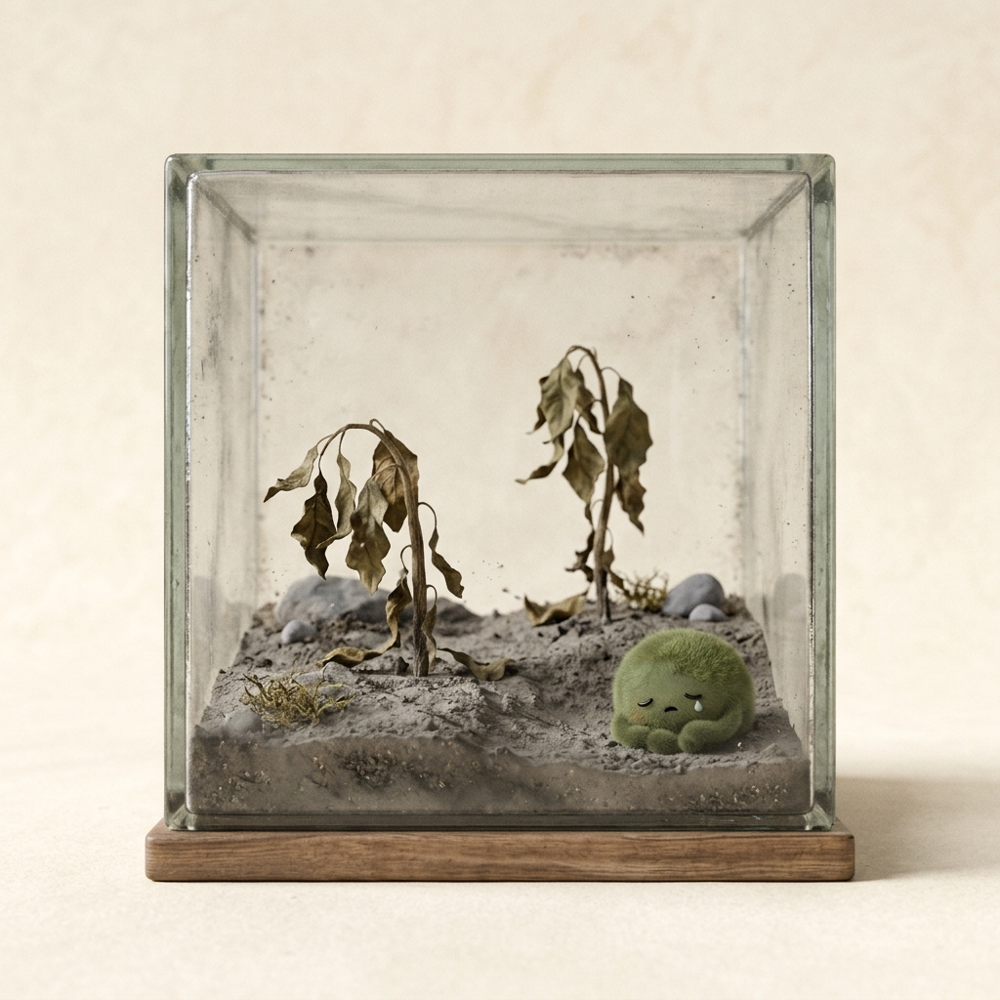
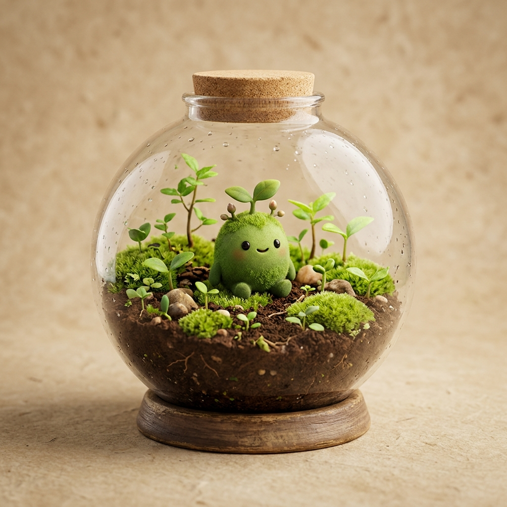
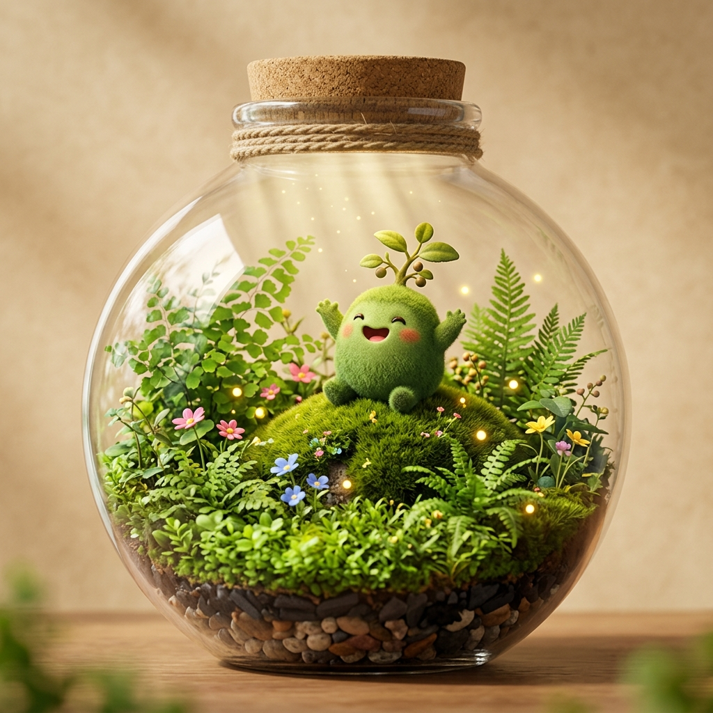

Mascote virtual · Saúde · Sustentabilidade
Cresce contigo, transforma o teu mundo.
A EVOLI é uma mascote virtual que acompanha, ensina e evolui com os teus hábitos: menos desperdício na despensa, mais pausas ativas durante o estudo e um impacto climático visível — tudo num só ecossistema.

Barra de energia Receitas anti-desperdício CO₂ evitado01 — Objetivo e contexto do projeto
Estudar cansa, desperdiça-se comida — e o planeta paga a fatura.
Os estudantes universitários enfrentam ritmos de vida altamente acelerados e exigentes, o que frequentemente despoleta hábitos prejudiciais para a sua saúde e para o planeta. É neste contexto que nasce a EVOLI: uma aplicação móvel centrada numa mascote virtual que responde a três Objetivos de Desenvolvimento Sustentável — Consumo Sustentável, Saúde de Qualidade e Ação Climática.
O objetivo do projeto é colmatar as lacunas identificadas no estado da arte, onde as soluções digitais existentes atuam de forma isolada — focando-se apenas na produtividade, no resgate de excedentes comerciais ou em receitas estanques — sem oferecer uma abordagem holística, motivadora e direcionada ao estilo de vida dos jovens adultos.
Sedentarismo e fadiga digital
A permanência prolongada em frente a ecrãs durante as horas de estudo gera fadiga física e mental.
Desperdício alimentar doméstico
A falta de planeamento e a gestão ineficiente da despensa dificultam a preparação de refeições e levam comida ao lixo.
Soluções que atuam isoladas
As apps atuais focam-se só na produtividade, nos excedentes comerciais ou em receitas — nunca nos três juntos.
02 — Objetivos do produto proposto
Quatro compromissos,
um ecossistema.
O que a EVOLI se propõe a conseguir por quem a usa — e pelo mundo lá fora.
Promover o Consumo Sustentável
Criar um sistema prático de registo de ingredientes em vias de expirar, gerando receitas rápidas que reduzam o desperdício alimentar em ambiente doméstico.
ODS · Consumo SustentávelGarantir uma Saúde de Qualidade
Combater o sedentarismo e a fadiga digital através de lembretes ativos que incentivem pausas regulares, hidratação e breves treinos físicos, mediados por um sistema de energia da mascote.
ODS · Saúde de QualidadeFomentar a Ação Climática
Calcular o impacto ecológico positivo em tempo real — comida salva e CO₂ evitado — traduzindo o esforço do utilizador na evolução visual de um ecossistema mais verde e limpo.
ODS · Ação ClimáticaUnificar a Gamificação e o Bem-Estar
Desenvolver uma ferramenta intuitiva e lúdica que una a sustentabilidade e a saúde académica num único ecossistema motivador de longo prazo.
Gamificação · Bem-estar03 — Características da solução e a quem se destina
Cinco funcionalidades,
uma rotina que compensa.
Gestor de Validades e Receitas Rápidas
Regista os ingredientes disponíveis em casa cujos prazos de validade estão prestes a expirar e gera automaticamente sugestões de receitas rápidas e económicas, adaptadas à vida académica.
Lembretes Ativos e Pausas Dinâmicas
Monitoriza o tempo de utilização contínua do ecrã durante o estudo e emite alertas amigáveis para fazer uma pausa, caminhar, beber água ou realizar um pequeno treino físico rápido.
Mascote Virtual e Gamificação
A mascote reflete o comportamento do utilizador: as refeições aproveitadas conferem pontos e o cumprimento das pausas ativas faz subir a sua barra de energia, evitando que fique cansada ou doente.
Ecossistema Virtual Interativo e Ação Climática
Calcula em tempo real o impacto positivo gerado — quantidade de comida não desperdiçada e pegada de carbono evitada. À medida que o impacto aumenta, o ecossistema da mascote torna-se mais limpo, verde e próspero.
Loja de Acessórios Ecológicos por Recompensas
Permite desbloquear acessórios cosméticos e ecológicos para personalizar a mascote, utilizando os pontos acumulados nas atividades sustentáveis e de bem-estar — reforçando a consistência a longo prazo.
A quem se destina
Para quem vive ao ritmo académico
Estudantes universitários e jovens adultos que procuram equilibrar o rendimento académico com o seu bem-estar físico e psicológico — gerindo melhor o orçamento e a despensa, e mantendo hábitos saudáveis sem esforço extra.
O mundo da EVOLI evolui contigo
Mais impacto → um ecossistema mais limpo, verde e próspero


04 — Estado da arte num minuto
O que já existe — e porque somos diferentes.
Analisámos três aplicações de referência. Embora sejam soluções úteis nas respetivas áreas, a EVOLI distingue-se por integrar funcionalidades que estas aplicações não disponibilizam em conjunto, respondendo de forma mais completa às necessidades dos estudantes universitários.
Forest
SeekrtechUtiliza a gamificação para incentivar a concentração: uma árvore virtual cresce enquanto o utilizador se mantém focado, podendo as moedas acumuladas contribuir para a plantação de árvores reais.
Too Good To Go
Too Good To GoPermite comprar excedentes alimentares de restaurantes e estabelecimentos comerciais através de Surprise Bags, contribuindo para reduzir o desperdício alimentar.
SuperCook
AMR SystemsApresenta receitas com base nos ingredientes que o utilizador tem disponíveis em casa, permitindo descobrir refeições sem precisar de comprar ingredientes adicionais.
| Critério | Forest | Too Good To Go | SuperCook | EVOLI |
|---|---|---|---|---|
| Gamificação | ||||
| Desperdício alimentar | comércio | casa | casa + validades | |
| Pausas ativas e movimento | ||||
| Foco no estudante universitário | ± | ± | ± | |
| Impacto climático visível | ± árvores reais |
A principal vantagem da EVOLI é a integração: junta gestão de validades e receitas, pausas ativas, gamificação e visualização do impacto climático numa só aplicação, com foco na rotina dos estudantes. Fontes na secção 06 — Fontes.
05 — Equipa responsável pelo projeto
Equipa DKL_05
Quatro estudantes da Licenciatura em Engenharia Informática do ISEP, no âmbito da unidade curricular LAPR1 — Competências Pessoais e Métodos de Trabalho.
Diogo Ribeiro
Estudante n.º 1260683 · LEIBeatriz Portal
Estudante n.º 1260918 · LEIHelena Sousa
Estudante n.º 1261277 · LEIAndré Monteiro
Estudante n.º 1250754 · LEI06 — Fontes de informação e referências
Para saber mais.
- AMR Systems LLC (s.d.). SuperCook: Zero waste recipe search engine. supercook.com
- NYC Food Policy Center (2024). Too Good to Go prevents food waste by selling surplus food as "Surprise Bags". nycfoodpolicy.org
- Seekrtech (s.d.). Forest: Stay focused, be present. forestapp.cc
- The Star (2021, 2 de agosto). Stay focused on the important things. the-star.co.ke
- Too Good To Go (s.d.). How does the Too Good To Go app work? toogoodtogo.com